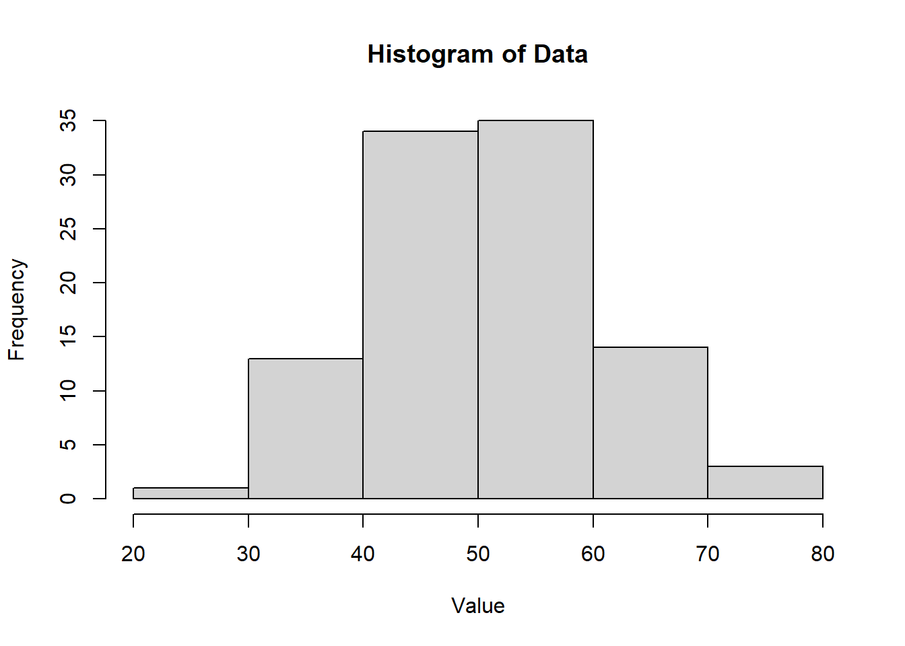
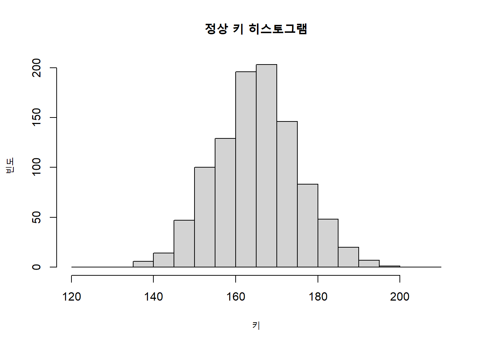
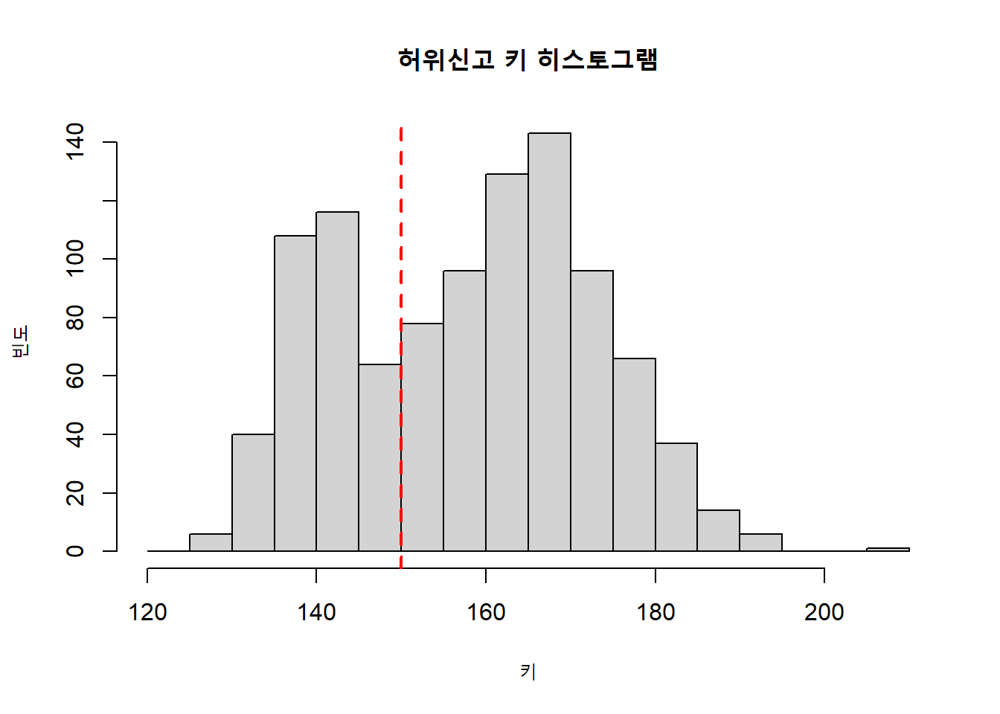

코드 보기
# 데이터 생성
set.seed(123) # 랜덤 시드 고정
data <- rnorm(100, mean = 50, sd = 10) # 평균 50, 표준편차 10인 정규 분포를 따르는 데이터 100개 생성
data[1:5][1] 44.39524 47.69823 65.58708 50.70508 51.29288여러개의 구간을 설정하고, 구간에 포함된 데이터 숫자의 개수를 집계하여 표로 나타낸 것을 도수분포표라 한다.
데이터 생성 (평균=50, 표준편차=10 의 난수 100개)
# 데이터 생성
set.seed(123) # 랜덤 시드 고정
data <- rnorm(100, mean = 50, sd = 10) # 평균 50, 표준편차 10인 정규 분포를 따르는 데이터 100개 생성
data[1:5][1] 44.39524 47.69823 65.58708 50.70508 51.29288도수분포표 변환, 20 ~ 80 까지 10 단위로 나누기 여기서 10 단위는 계급폭이라 하고 계급폭의 가운데 값을 계급값이라 한다.
breaks <- seq(20, 80, by = 10)
freq_table <- table(cut(data, breaks = breaks, right = FALSE))
data.frame(freq_table) Var1 Freq
1 [20,30) 1
2 [30,40) 13
3 [40,50) 34
4 [50,60) 35
5 [60,70) 14
6 [70,80) 3도수분포표를 만들 때, 계급 개수를 몇 개로 하면 될지 기준을 정할 때는 스터저스 공식을 참고할 수 있다.
\[(계급의\ 개수)\ \fallingdotseq\ 1+log_2 (데이터\ 크기)\]
1+log2(100)[1] 7.643856히스토그램이란, 가로축이 데이터값이고, 세로축이 도수이며 각 계급을 직사각형으로 표현한 그래프이다.
# 히스토그램 생성
hist(data, breaks = breaks, right = FALSE, main = "Histogram of Data", xlab = "Value", ylab = "Frequency")
평균의 아버지 아돌프 케틀레는 프랑스 징병 검사 10만명 분의 키 데이터를 히스토그램으로 만들었다.
보통이라면 키 히스토그램은 봉우리가 하나(단봉형, unimodality)여야 하는데, 봉우리가 두개인 히스토그램(다봉형, multimodality)이 나타난 것을 발견했다.
이를 통해 키가 157 이하라고 허위 신고한 사람이 많다는 것을 밝혀냈다.
data <- rnorm(1000, mean = 165,sd = 10)
breaks <- seq(120, 210, by = 5)
freq_table <- table(cut(data, breaks = breaks, right = FALSE))
hist(data, breaks = breaks, right = FALSE, main = "정상 키 히스토그램", xlab = "키", ylab = "빈도")
set.seed(120)
data <- rnorm(700, mean = 165,sd = 10)
data <- append(data,rnorm(300, mean = 140, sd=5))
breaks <- seq(120, 210, by = 5)
freq_table <- table(cut(data, breaks = breaks, right = FALSE))
hist(data, breaks = breaks, right = FALSE, main = "허위신고 키 히스토그램", xlab = "키", ylab = "빈도")
abline(v = 150, col = "red", lwd = 2, lty = 2)